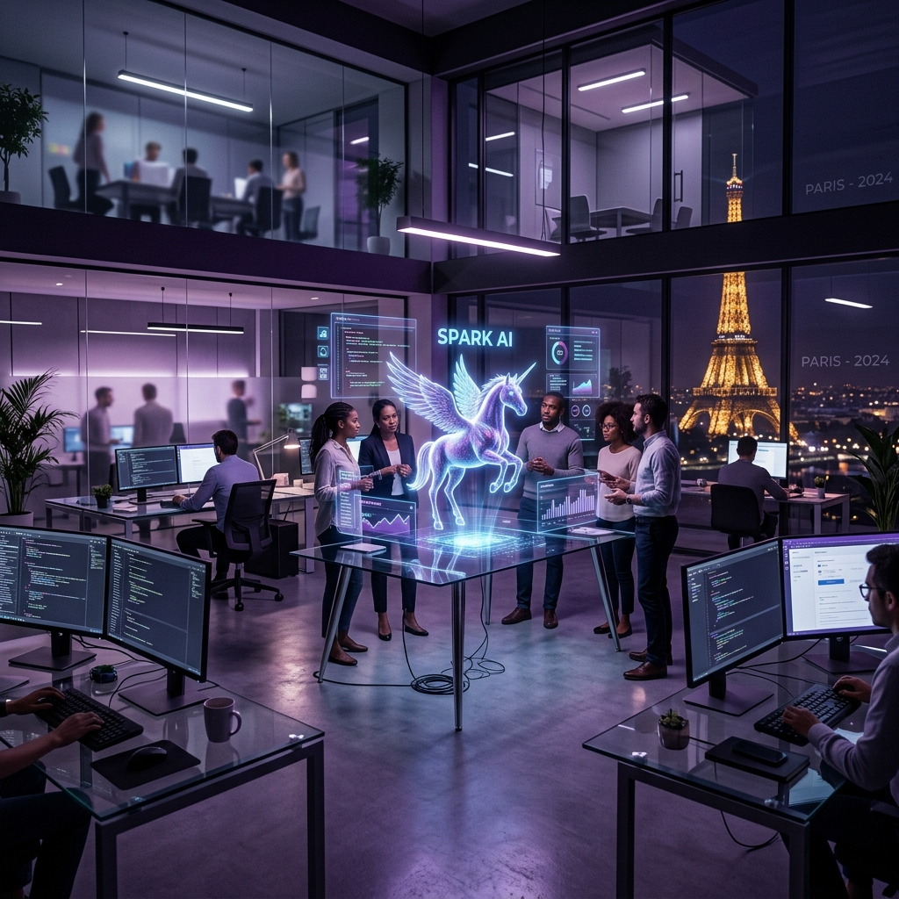

A Unicorn Factory
Backed by national initiatives and massive private investment, France has successfully nurtured over 25 software "unicorns" and tech giants including Doctolib, Back Market, Shift Technology, and Sorare, reshaping industries globally.
Station F & AI Dominance
Station F in Paris is the world's largest startup campus, hosting thousands of entrepreneurs. Beyond startups, France is leading European Artificial Intelligence research via homegrown champions like Mistral AI and strategic partnerships with global tech leaders.